Spatial modeling is an important instrument to conduct geospatial analysis to understand the
world
and guide decision-making. In GIS, spatial models are formal languages to express mechanisms
of
geographic processes and design analytical workflows to understand these processes. With the
development of GIS and computer science, various types of spatial models and modeling
techniques
have become available, which endows the term of "spatial model" with different meanings.
GIS • 3D Analysis
The ArcGIS 3D Analyst extension provides tools for accomplishing robust work with GIS data in
a
three-dimensional (3D) context. It allows you to create and conduct 3D analysis using many
types
of
3D data, such as 3D points, 3D lines, 3D polygons, point clouds, multipaths, TINs, terrain
datasets,
and raster's. You can create, import, and convert 3D data between different formats, and
analyze
surfaces and 3D feature data together to better understand your environment in a 3D context.
3D ANALYSIS METRICS:
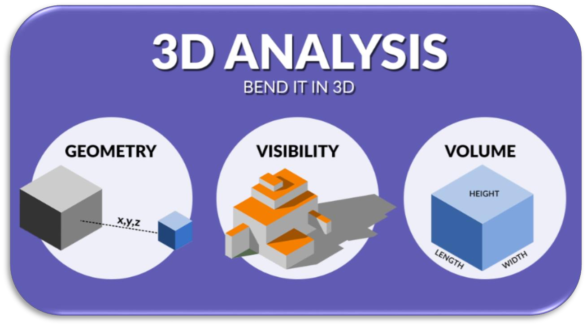
GIS Network Analysis
Network analysis consists of a set of analysis techniques used with networks. By using
geometric
networks, you can understand how anything flows within them. Rules dictate how objects move
through
the network. Each type of analysis follows these rules, influencing the outcome of the
selected
route or result.
Route
Closest facility
Service areas
OD cost matrix
Vehicle routing problem
Location-allocation
Time-dependent analysis
Select Optimal Site
Optimal site selection considers the demand to locate the best location given several
facilities.
For
example, it can help decide where to build new hospitals depending on existing hospitals and
the
available demand. Location-allocation - This network analysis tool helps business owners
pinpoint
the optimal location for their store. It can also compare with competing stores to target
market
share.
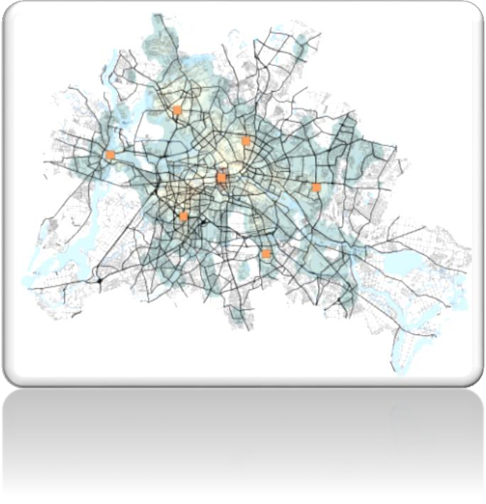
GIS • Data Collection and Integration
The "Data Collection and Integration" provides with comprehensive techniques for gathering
data
from
diverse sources, including files, relational databases, web pages, and APIs.
The "Collect Data from Files": handle various file formats, such as
txt,
csv,
json, xml, html, and more, for effective data collection. You will learn how to read,
parse,
and
extract relevant data from different file types, enabling you to gather valuable
information
from diverse sources.
The "Collect Data from Web": extract data from various webpage formats
using
Python libraries.
The "Collect Data from APIs": interact with various websites that
provide
Application Programming Interfaces (APIs).
The "Data Integration": techniques and methodologies for integrating
data
collected from various sources. how to combine and merge datasets, handle data
inconsistencies,
and create a unified dataset for further analysis and decision-making.
GIS Digital elevation Model Extraction
A digital elevation model (DEM) is a regularly spaced raster grid of elevation values of a
surface
terrain. We use DEMs to produce maps such as contour maps, orthophoto maps, and perspective
maps. We
use DEMS for route planning in the construction of highways and railways. In remote sensing,
DEMs
are used in mapping, orthorectification, and land classification. We extract elevation data
from
scanned or digital aerial photographs, or from an along track or an across track pushbroom
satellite
acquisition or drones.
Open source Mobile Application(Data Collection - Survey 1.2.3- Navigator)
Dashboard
Mobile Application(Data Collection - Survey 1.2.3- Navigator)
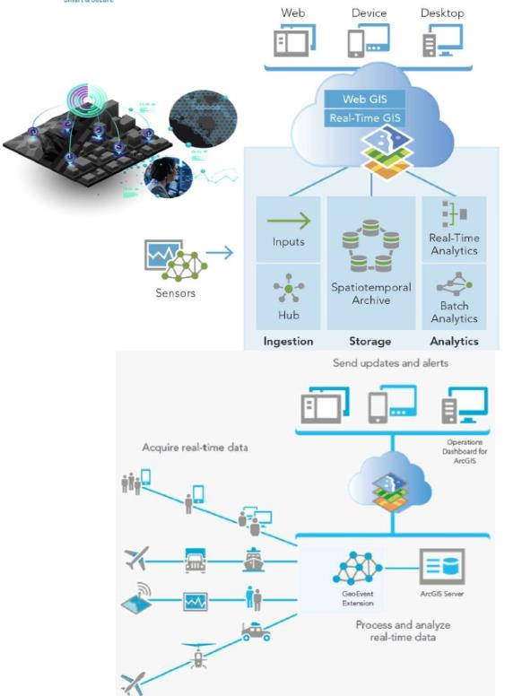
Remote Sensing Applications
• Hyper Spectral Remote Sensing
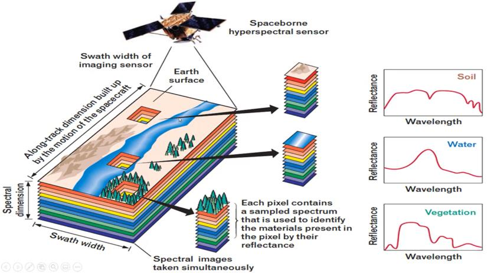
•Remote Sensing Applications Spectral library
Facilitate laboratory and field spectroscopy and remote sensing for identifying and mapping
minerals,
vegetation, and manmade materials Spectral libraries are collections of spectral reflectance
signatures representing groundcover features that frequently occur in a study area. These
data
are
collected to: Determine if features can be differentiated from each other based on
reflectance
signatures as input for mapping algorithms that match pixel values to target spectral
reflectance
signatures Using satellite imagery makes it easier to get results quickly
•Remote Sensing Applications Sand Dunes.
Satellite data provides a powerful tool for studying sand dune movement, offering insights
into
environmental changes and aiding in the management of affected areas. As technology
advances,
the
ability to monitor and analyze these dynamic landscapes will continue to improve.
Different satellite sensors capture images across various wavelengths of the electromagnetic
spectrum, including visible, infrared, and microwave bands. Factors like spatial resolution,
spectral resolution, and temporal resolution are important in selecting the right satellite
data
for
an application. Satellite images often require preprocessing steps like radiometric and
geometric
correction, atmospheric correction, and pan-sharpening. Advanced techniques like
supervised/unsupervised classification, change detection, and object-based image analysis
can be
used to extract meaningful information from the imagery. Interpretation and Application
Depending on
the goal, analysts may look for features like land cover, vegetation health, urban
development,
natural disasters, or military activities. Combining satellite data with other geospatial
data
sources like GIS layers, ground observations, and socioeconomic data can provide deeper
insights.
•Remote Sensing Applications • Light Detection and
Ranging
(LiDAR) Solutions
Applications of LiDAR:
Topographic mapping and terrain analysis Urban planning and infrastructure monitoring
Forestry
and
vegetation management Flood risk assessment and water resource management Archeological site
mapping
and analysis
Integrating LiDAR with Satellite Imagery:
Combining high-resolution LiDAR data with multispectral satellite imagery provides a powerful
synergy. The 3D point cloud from LiDAR can be overlaid on the 2D satellite imagery to
extract
more
detailed information. This enables applications like 3D modeling of urban environments,
biomass
estimation in forests, and precision agriculture.
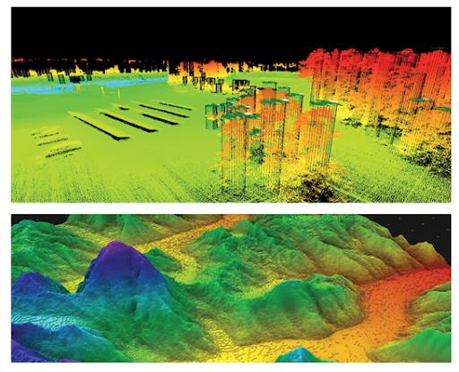
Mobile Data Collection Tools
Mobile Data Collection Tools
Data collection in the field using mobile apps or specialized software
Real-time processing and quality control of the collected data
Georeferencing, point cloud processing, and feature extraction
Integration with GIS platforms and satellite imagery for analysis
Mobile Data •Mobile Mapping Applications
Infrastructure mapping and asset management
Natural resource inventory and monitoring
Urban planning and 3D city modeling
Disaster response and damage assessment
Precision agriculture and forestry
Drone and GPS
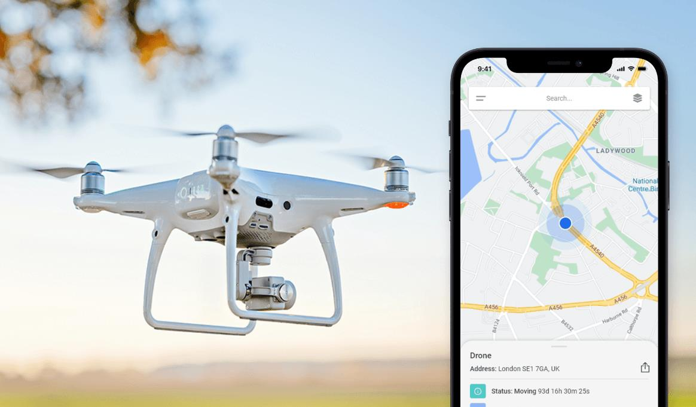
•Drones
High-Resolution Imagery
Drones equipped with high-quality cameras can capture aerial imagery at much higher spatial
resolutions than commercial satellite sensors. This ultra-high-resolution data can be used
to
precisely map and analyze features that are difficult to discern in satellite imagery, such
as
individual trees, infrastructure components, or small-scale land use changes.
Targeted Data Collection
Drones can be deployed to specific areas of interest to collect focused, on-demand data that
fills
gaps or provides additional context for satellite-derived insights. This can include things
like
multispectral or thermal imagery, 3D point clouds, or even ground-truth data collection.
Temporal Dynamics
Drones can be used to conduct repeat observations over a site, allowing for the monitoring of
changes
over time at a much higher frequency than typical satellite revisit rates. This enables the
detection and analysis of short-term, dynamic processes that may be missed by
satellite-based
change
detection.
3D Modeling and Visualization
Drone-captured imagery and LiDAR data can be used to generate detailed 3D models of the
landscape,
buildings, infrastructure, and other features. These 3D representations can then be
integrated
with
satellite data to create immersive, multi-dimensional visualizations and analyses.
Situational Awareness and Field Support
Drones can provide on-demand aerial reconnaissance and real-time observation to support field
teams
conducting satellite image analysis. The drone-captured imagery and video can offer valuable
context
and ground-truthing for interpreting satellite data.
•GPS
GPS (Global Positioning System) is a crucial component that enables the integration of
various
geospatial data sources, including satellite imagery, for comprehensive analysis. Let me
explain
how
GPS plays a vital role in satellite image analysis:
Geotagging and Ground-Truthing.
Mobile Mapping and Data Collection.
Change Detection and Monitoring.
Precision Agriculture and Forestry.
Disaster Response and Emergency Management.
•Transportation
Map Routes and Track Movement
Navigating the skies, bodies of water, or roadways can definitely be challenging at times,
especially
when you are not familiar with the logistics of the area. Retrieve real-time data on weather
or
traffic and combine it with data about bike lanes or port schedules to ensure that commuting
from A
to B can be done as easily and safely as possible.
Visualize and Simulate Transportation Scenarios
Data can be much easier to understand when represented on a visual platform. By transforming
2D
data
into 3D models, not only will key concepts be understood more quickly, but it will also lead
to
more
innovative and creative solutions to help with your supply chain and all those affected by
the
transportation industry.
Organize Data for IoT Management
Mobile applications and "smart" devices are making their way into the world of
transportation.
Various transportation companies can make use of the internet of things by sending
notifications
regarding the status or location of vehicles or parcels. Manage IoT data effectively and
efficiently
to keep all stakeholders connected!
Powering Transportation Planning with Location Intelligence
Hear from our Data Science team on how to turn billions of GPS events into insights on
commuting
patterns
Migrate Between Departments and Systems
Collaboration among teams and their data is vital for success. Data is knowledge, and it's
important
that it is available to those that need it. By accessing data and performing quality
analysis to
meet your team's standards and specifications, various solutions can be solved leading to
everyone
in your company feeling accomplished!
Traffic Management
Traffic jams cost the US a staggering $87 billion in lost productivity per year. Citizens in
every
city now use data from smartphones & embedded satellite navigation to work around traffic.
Yet
only
a handful of local governments are fully capturing the value of new location data streams &
spatial
analysis to optimize their city traffic management operations & reduce CO2 emissions.
Road Safety Analysis
With a wide range of data streams now available from a rapidly growing number of sensors &
GPS
devices, we can now understand the health of our road networks at a deeper granularity than
ever
before. To make our cities safer & more efficient, local governments need to apply Spatial
Data
Science methodologies, going beyond the analysis of historical data, to predicting the
probability
of incidents by location.
Plan for the Future
With the world population increasing at an exponential rate, it is inevitable that
transportation
agencies, departments, and companies will have to find a way to keep up with the pace of
change.
By
monitoring data and planning projects carefully, you can assure that your transportation
services
are accessible and safe for everyone.
Utilities
Data challenges will continue to exist for utility companies due to increasing populations
and
new
technology.
Adapt to Technological Advancements
New technology is being introduced to the world at an exponential rate. Adapt to increasing
amounts
of data being sent from smart meters and other devices by utilizing storage spaces on the
cloud
to
modernize your company.
Integrate Multiple Data Sources
More data than ever is being generated by utility customers thanks to the internet of things
(IoT)
movement. Integrate your data in one platform to begin unlocking solutions for how to reduce
costs
and increase efficiency for both you and your customers.
Adopt Business Intelligence
Transforming data to be compatible with BI platforms like Tableau or Qlik can help you
identify
what
your next business decision will be. Modifying your data specifically for your needs opens
up
huge
opportunities for identifying business solutions.
Maintain GIS Networks
With more people moving into urban spaces, the demand for utility access is increasing.
Maintain
assets and spatial network information collected in the field by automatically directing
data to
correct storage locations.
Automate Data Distribution
Big data can be intimidating, but managing it doesn't have to be difficult! Close the gap
between
you, your customers, and field workers by automating the processing of incoming data to save
both
time and money.
• Airport & Aviation
Facilities Management
Integrate and sync applications and databases across different functions of airports to
ensure
everyone has timely access to the data they need.
Indoor Mapping
Integrate, convert, and load data into indoor mapping applications such as Apple Maps and
HERE so
passengers can easily navigate to points of interest.
Information Exchange via AIXM
Efficiently move data in any format or structure into the complex Aeronautical Information
Exchange
Model (AIXM), as well as consume it in any application.
Spatial Analysis
Analyze spatial data associated with airport facilities and airspace. For instance, calculate
the
fastest indoor routes or identify potential obstacles in takeoff and landing paths.
The energy sector deals with massive volumes of data. With us you can unlock what's
beneath
the
surface to find solutions for business intelligence, customer engagement, and of
course,
energy
production! Create automated workflows that process your data as soon as it's been
collected
so you
can spend more time analyzing your data instead of fighting it.
Modernize Your Data Management System
Many companies have been moving their databases to cloud storage systems because it
is
scalable,
secure, and can save help save money. Integrate and transform your data without
losing
any
information along the way, then move it directly to your cloud network so that it is
accessible to
your colleagues.
Assess Spatial Variables
To make use of a natural resource you must understand the environmental and spatial
variables
around
it. Use satellite imagery or other geospatial data in raster or vector formats to
get a
full
understanding of a natural resource. Share these maps with those in the field so
that
they
are
informed of their exact surroundings.
Integrate Disparate Datasets
When data is properly remodeled and standardized for specific uses, the possibilities
are
endless.
Don't let large volumes of complex data overwhelm you! Reveal business and
management
solutions by
analyzing a variety of data all in one place. To make things even better, do this
all
without
writing any code.
Manage Your Geodatabase
No matter what kind of energy your company works to provide, understanding how
resources
move
through
space and time is key. Transform network files or CAD drawings and add them to your
geodatabase.
Even use your data directly in web maps that customers can interact with and
retrieve
information
from! Begin processing your data as soon soon as it has been collected. Set up
events
that
are
triggered by actions like new data being entered to begin automatically processing
your
data.
Instantly calculate and forecast what your supply and demands look like.
Emergency Services
First responders devote their time and energy to saving lives in our communities. For
them to
do
this, they must have as much information as possible regarding a situation and they need
it
to
be
available as soon as possible. Learn how FME has been used to deliver data and
information
to
local
heroes.
Bring Life Saving Information Together
Integrate and exchange data between various systems like 911 dispatch systems or records
management
systems to enable dispatchers, paramedics, firefighters, coast guards, or police forces
to
access
various datasets related to their emergency case.
Calculate the Fastest Routes
When there's an emergency, first responders need to try and get there as soon as
possible. By
processing local geospatial data and applying them to mapping systems, first responders
can
access
the quickest routes based on their location.
Deliver Situational Awareness
Conduct real-time analysis of variables such as topography or property boundaries and
deliver
insight
to those on the ground. Whether you're assessing risk or dealing with active crimes,
understanding
the surroundings is critical to keeping people safe.
Reduce Manual Efforts
Automatically run integration workflows in the background while your team is out helping
citizens
to
ensure you always have data that is ready to use. Create maps, generate reports, and
even
send
mobile notifications.
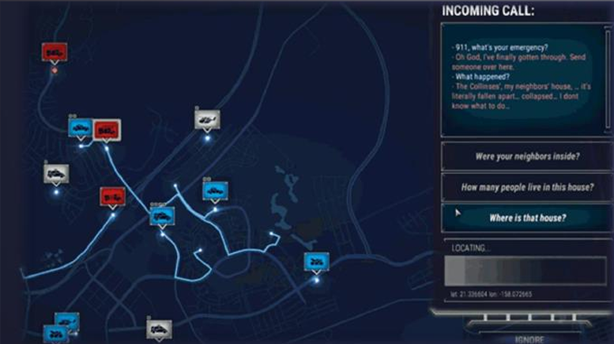
CITIES & Government
CITIES & Government • Smart Cities
ICT Infrastructure
IoT Devices
Data Analytics and AI
Sustainable
Energy/Infrastructure
Intelligent Transportation
Systems
Efficient Utilities
Management
Telecommunications
Telecommunications
The rise of social media, mobile applications, and the information revolution are all a
result of
the
advancements in telecommunication. To ensure that your services are always up to speed, you
need
to
have complete control of any and all of your data. That's where TEC SLUTION comes in.
Network Planning
Optimizing Telco networks isn't just about rolling out new technologies such as 5G. It is
also
fundamental to get the right mix of products & services-considering both market requirements
&
new
location data streams that help to understand consumers at a deeper granularity.
Decision-makers
in
telecommunications need to consider deployment objectives, their long-term network planning,
marketing strategy & capability build-which require significant geospatial expertise &
specific
software.
Site Selection
With MVNO's & OTT players redefining the way Telco's communicate with customers, the pressure
is
on
to maximize the profitability & performance of brick & mortar sites. Many operators are
consolidating their footprint, with Spatial Data Science playing a key role in understanding
how
a
store network should evolve to serve the highest number of high value customers, who are
most
likely
to embrace the offline experience.
Smart Cities & IoT
The "smartification" of cities is set to become a $7.6 billion opportunity for Telco's by
2023.
However, leading operators are going further than simply providing connectivity through IoT
sensors
to public sector clients, and providing analytics solutions on top. By allowing cities to
gain
insights that can help them to reduce costs in areas such as waste management, street
lighting,
&
public transport-telcos can increase their total contract values dramatically through
Location
Intelligence.
Improve and Refine Your Data
Accurate data is essential for providing consistently fantastic service to your customers.
Each
action you take, whether it be altering spatial network drawings or tidying semantic errors
in
an
attribute table, will help you continue to exceed expectations.
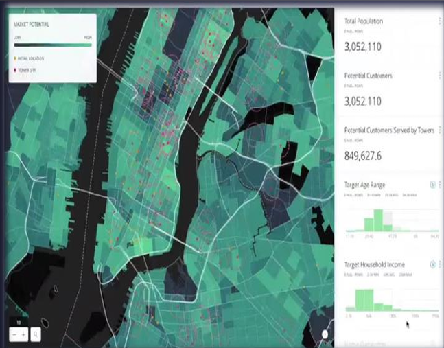
Engineering & Construction
Engineering & Construction
Operational efficiency in AEC projects is hindered by data silos, manual workflows, and the
complexity of sharing and accessing data. By integrating data across systems and
streamlining
workflows, your teams can plan, design, build, and operate with increased accuracy and
efficiency.
Improve Stakeholder Engagement
Clean, validated, connected and shareable data can help you plan and make strategic decisions
for
your AEC projects. Doing so enables others to have a holistic view of the project at hand.
When
you
have collaborative efforts and a clear objective, it's easy to be more effective and support
various
projects.
Maintain Data Integrity
Increase data quality no matter where your data is coming from. With repeatable workflows
that
can
run on a schedule or based on trigger events, QA/QC and data validation tasks can be
completed
before you even start your workday. When the tasks are complete, send status updates to keep
everyone updated and informed.
Streamline Project Workflows
Integrate large datasets like BIM, CAD, or GIS with automated data transformation workflows
to
save
time and money on repetitive, manual tasks. Whether you're using point clouds for 3D
modelling,
or
aerial imagery from drones to monitor project progress, having streamlined documentation and
communication workflows will help drive operational efficiency.
Enhance Cross-Team Collaboration
When working with multidisciplinary teams, data coordination is crucial. Integrate data from
interior
designers, urban planners, engineers, and surveyors to paint the full picture. By moving
data
into
an accessible, centralized database and removing traditional barriers, stakeholders can
engage
more
effectively.
Design Smart Cities
Cities with rising economies are incorporating IoT technologies into their environments. Use
FME
to
integrate sensor data and building management systems to create digital twins that make
assessing
asset performance and forecasting maintenance activities simple.
Health Technology
Health Technology
Everyone will need access to health care systems at some point in their life, and so, it is
crucial
for data systems on patients, diseases, and medicine to be kept organized. FME gives you the
power
to integrate, transform, and manipulate your data for your exact needs all without any need
for
writing code.
Healthcare Analytics
Making decisions that are beneficial to your population's health isn't easy with so much
health-related data in silos, different formats & systems. We help you reach HIPAA compliant
to
make
critical decisions, whether you are an insurer, a public health authority or a local
government.
Disease Spread
A commonly shared scenario in both the healthcare and GIS world is how John Snow was able to
identify
the cause of cholera outbreaks through spatial analysis. With support for data formats like
LiDAR,
imagery, and other geospatial data, you can track what spatial variables may be impacting
the
spread
of a disease or virus.
Wearable Technology
Activity trackers and smart watches are one of the most commonly used IoT technologies. Each
user
of
the device is able to monitor things like heart rate, steps taken, amount of sleep, and even
stress.
Integrate this data to help with research or to understand your own health patterns further.
New Innovations
With spatial, three-dimensional, and even DICOM support available, your health care data can
be
manipulated and shared however you want it. Don't limit yourself to typically used
procedures.
Instead, use your creativity to do something new that will help both yourself and those that
you
impact.
Defense and Aerospace
Defense and Aerospace
Reliable, detailed data is necessary for the safety of those in the air and on the ground.
TEC
SOLUTION will provide data integration solution to send your data through workflows which
manipulate, customize, and help validate your data exactly as you need it.
Integrate Large Volumes of Data from Various Sources
To gather as much Intel as possible, data must be collected from various sources. Drones,
databases,
imagery, historical records from legacy systems... the list never ends! Transform and
manipulate
all
your collected data so you have information the way you need it, when you need it.
Create and Distribute Information Resources
Communication is key no matter what role you play in the defenseman aerospace industry.
Having
information be accessible and delivered to those in the field in real-time is critical.
Generate
custom reports, maps, or notifications and automatically deliver them to those that need it.
Process Data Efficiently
The quicker data can be adequately processed, the sooner you will have the intelligence that
you
need. Whether you have IRS tasks, need to mine data, or are sharing data in real-time, using
automated workflows will free up your time for more challenging tasks.
Border Control Organizations
Earth observation technologies are especially valuable for real-time monitoring of land and
marine
borders in isolated and remote regions. Using high-resolution images from satellites, aerial
photography and drones, it is possible to analyses arge sets of historical data and draw up
measures
to prevent border violations at the regional and national levels.
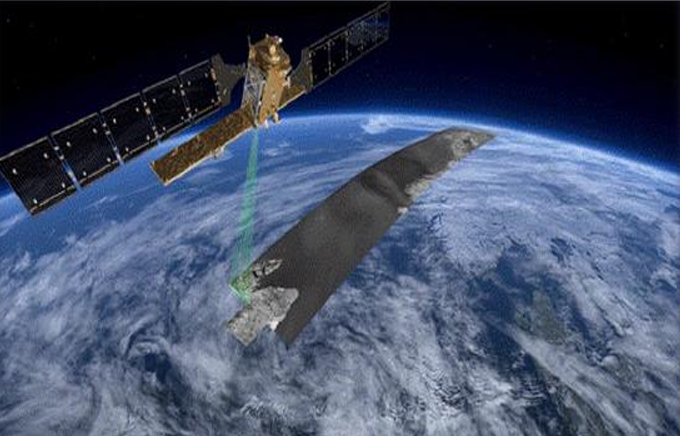
Education and Technical support
Education and Technical support Technical support for
the
company projects
Help Desk Support: Establish a dedicated help desk or support team to
handle
technical inquiries and issues raised by project team members. Provide a single point of
contact
for project-related technical problems, questions, and requests. Ensure timely response
and
resolution of support tickets or inquiries through various communication channels (e.g.,
email,
phone, ticketing system).
Technical Issue Troubleshooting: Analyze and diagnose technical issues
reported
by project team members. Gather relevant information to understand the problem and its
impact on
project progress. Utilize problem-solving skills and technical knowledge to identify the
root
cause of the issue.
Technical Guidance and Consultation: Offer guidance and advice on
technical
aspects related to project activities. Assist project team members in selecting
appropriate
tools, technologies, or solutions. Provide recommendations on best practices and
industry
standards to optimize project outcomes.
Software and Hardware Support: Support the installation, configuration,
and
maintenance of project-related software applications and tools. Troubleshoot software
issues,
such as compatibility problems, bugs, or errors. Assist with the setup and
troubleshooting
of
project-related hardware devices or equipment.
System Administration and Infrastructure Support: Manage and maintain
project-related servers, networks, and infrastructure components. Monitor system
performance,
security, and availability to ensure project continuity. Perform routine maintenance
tasks,
suchs as backups, updates, and patches.
Documentation and Knowledge Base: Create and maintain a knowledge base
or
documentation repository that captures common issues, solutions, and best practices
encountered
during the project. Develop user guides, FAQs, or troubleshooting instructions to
empower
project team members to resolve common technical issues independently.
Collaboration and Training: Collaborate with project team members to
understand
their technical needs and challenges. Conduct training sessions or workshops to enhance
the
technical skills and knowledge of project team members. Foster a collaborative
environment
where
team members can share their expertise and learn from each other.
Continuous Improvement: Collect feedback from project team members
regarding
technical support experiences. Regularly review and improve technical support processes,
workflows, and tools. Stay updated with emerging technologies and industry trends to
provide
relevant and effective technical support.
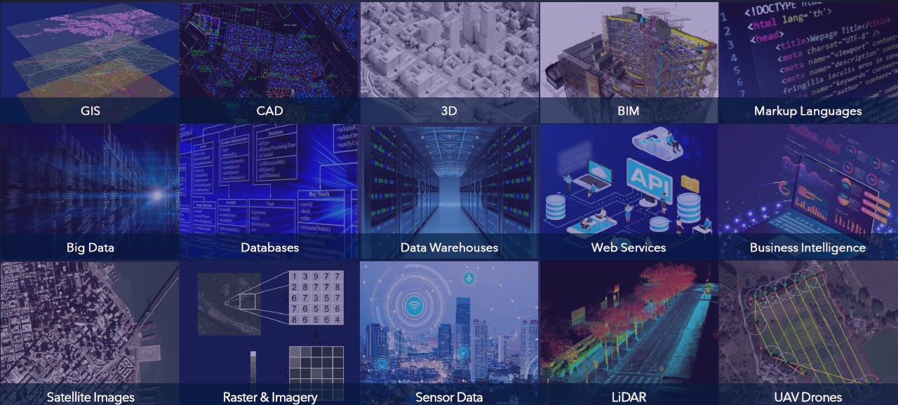
CASES SMART AIRPORT (Indoor Mapping)
Vancouver: Interactive maps for web and mobile
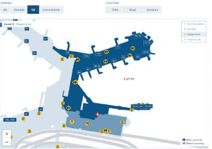
Amsterdam: Augmented reality way finding and more
Victoria, BC: Converting to IMDF for Apple Maps<< /h4>
Denver: Interactive online map
CASES Finding pavement cracks using Al (CV)
The term "Computer Vision", or CV, has long left the pages of scientific papers and the
presentation
slides of specialized conferences. It is used more and more in everyday life from cars to
smartphones. We demonstrated how using Computer Vision we can detect road signs and fire
hydrants,
and geospatial imagery. This makes perfect technology, as many organizations deal with a lot
of
aerial, satellite, and drone images, and often need to spend hundreds of hours going through
the
orthos, looking for changes, identifying new objects, tracking lost entities, and updating
their
datasets with this new information.
1-Prepare the data
2-Train the detector
3-Run the detection
CASES Neural Network Classification For Crop
Production
Problem Statement:
It is necessary to accurately and repeatedly monitor crop production rates for supply chain
management.
Unique Solutions:
Utilization of AI (neural nets) and high-cadence satellite imagery that can identify evolving
crop
zones and crop types.
Customer Benefit:
Ability to measure crop production rates; providing valuable insight for supply chain
customers.
CASES
Top 4 Challenges and Solutions of Infrastructure Asset Management
Infrastructure asset management can be complex and involve a lot of incompatible data formats
and
standards. Data integration workflows help to harmonize systems and keep information clear
through
all phases of infrastructure design, management, and maintenance. Let's look at 4 ways data
integration workflows improve infrastructure asset management with some inspiring,
real-world
examples from cities, utility companies, and other facilities around the world.
Converting and processing CAD
and
GIS
data automatically
Creating a web app to help
identify
risks
to infrastructure
Combining disparate sources for
a
unified data model
Complying with standards
Complying with standards
Infrastructure asset management data usually needs to comply with CAD and civil submission
standards.
It also needs to meet internal standards for data quality and robustness. Layer names,
attribute
names, geometry, and other aspects of a dataset have to be checked and repaired. Using data
integration workflow means infrastructure asset management data can be automatically
validated
against complex standards. It can then go on to repair data and generate a Quality Assurance
report
which is automatically emailed to stakeholders. We create a self-serve data validation
portal
where
users can submit datasets in a web interface and get back a QA report. When working with
infrastructure asset management, data validation workflows often include converting models
to
specification through transformations like schema mapping, simplification, geo-referencing,
extruding footprints to 3D, and working with appearances and textures.
Asset handover and data delivery
Converting data into other formats is often necessary through all phases of a project.
Anything
from
asset handover, delivering as-builts, generating digital assets and packages, to other
requirements
for sharing and collaboration. When multiple teams and stakeholders are involved in a
project,
data
often has to be viewable in an easy-to-share, interactive way.
Automating infrastructure asset management to save time and money
A common thread through all of these examples is automation. Self-serve data upload or
download
applications, sending reports, keeping systems synchronized and data warehouses up to date,
and
more, all rely on automation to operate efficiently. Automation frees up time for people to
work
on
other tasks. Data integration workflows are built once, and then used in an Automation. The
nature
of an Automation is that when an event happens—say when a new file arrives in a directory,
an
email
is received, or on a schedule—an workflow is triggered and actions are taken based on the
results.
Aggregating data into a warehouse or centralizing it into a unified data model is the
essence of
data integration and can be achieved with a repeatable workflow.

 ~~~
~~~


 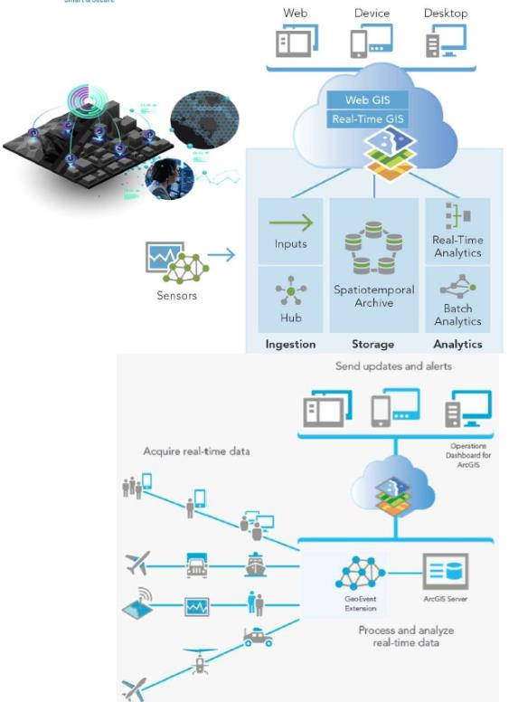
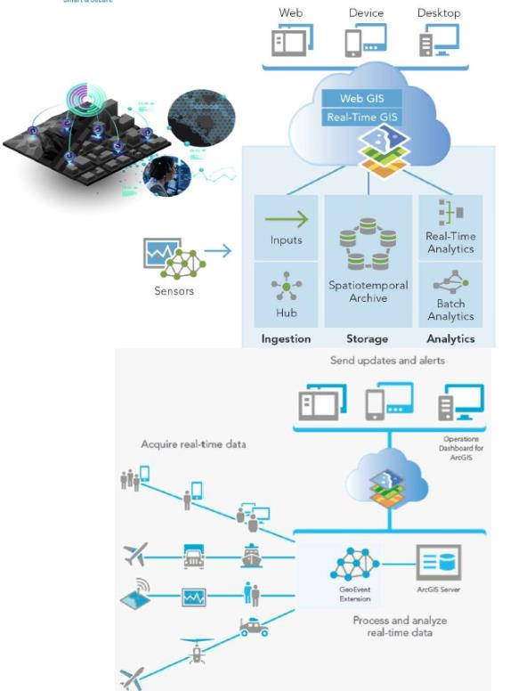


 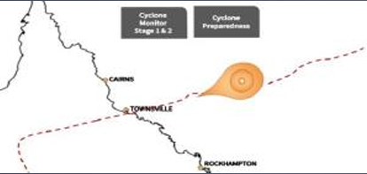
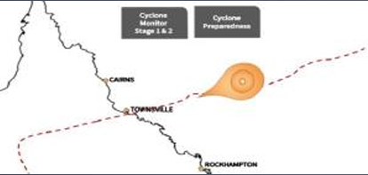